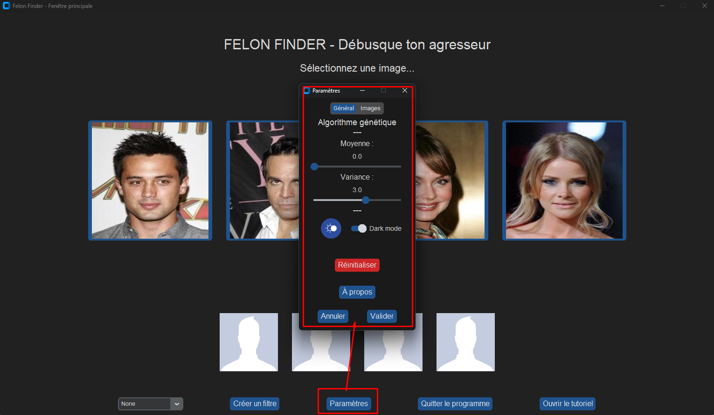

Using the software
General use
Selecting images and letting the algorithm do its magic
The first intent of Felon Finder is to let you find a composite sketch of a potential assailant according to what you remember.
The most important function of Felon Finder is its algorithm: you only have to get random images until you get to someone that looks like the potential assailant. Once you get there, you can select one or more pictures that correpond to this person and validate your choice.

Not satisfied yet ? You can use the button “Rafraîchir” to keep reusing the algorithm on the same reference picture, in case the randomness did not please you enough.
{kind=link}
Saving one or more images
Once you are happy with one or more of the showed pictures, you can save them in a path you choose yourself (everything is made simple through the software, don’t worry !).

Then :

Note that you always can change the path where your images are saved through the “Paramètres” menu, doing so :

Back-tracking
If you realize you went to fast through the pictures, you always can come back to the last you saw. You can do this with the “Photos précédentes” button.
{kind=link}
You can even come back to the very first pictures !

Changing the parameters
Whether you want to tweak the parameters for fun, want to experiment with a higher variance for the algorithm, or want to switch between light and dark mode for the software, everything is possible in the options menu.
{kind=link}
Using the “Réinitialiser” button permits going back to the default parameters anyway, so don’t be afraid to try a higher mean or a lower variance !
Note
Changing the parameters between two validations also works ! The algorithm will always apply the last parameters validated by the user.
Advanced feature: “Filtre”
What is a “Filtre” and why use one ?
First example : the sourire “Filtre”
Fig 1 - Before using the filter |
Fig 2. After using the filter |
Second example : the longs cheveux bruns “Filtre”
Fig 1 - Before using the filter |
Fig 2. After using the filter |
How to get to create your own “Filtre” ?
{kind=link}
{kind=link}
In-depth “Filtre” constructions steps
{kind=link}
{kind=link}

Note
This feature might be inconsistent sometimes. You may have to enter and leave the “Filtre” menu once again to have your newly created filter shown in the list. The best option if that does not do is to restart the software.
How to apply a “Filtre” on the generated images ?
{kind=link}
{kind=link}
Non-exhaustive list of questions
Does Felon Finder guarantee 100% accurate identification of an assailant ?
Felon Finder is an identification aid tool and cannot guarantee 100% accurate identification. However, it can greatly facilitate the identification process by providing detailed composite sketches based on your descriptions and memories.
How are the composite sketches produced ?
The images selected by the user are encoded using a variational autoencoder. Modifications inspired by genetic mutations and crossovers are then applied to the encoded images. After these modifications, the images are decoded and returned to the user.
I found my assailant !
If you have identified the perfect composite sketch of your assailant among the produced files, select their image, press the “Enregistrer” button, and let the authorities do the rest of the work.
Can I apply the modifications to more than one picture ?
Every aspect of Felon Finder is made to work with the amount of pictures you want, from 1 to 4. When you select 1, 2, or 4 pictures, the software uses them to the best extent. When you save 4 pictures, the 4 of them will be saved in your chosen folder. It is the same with filters.